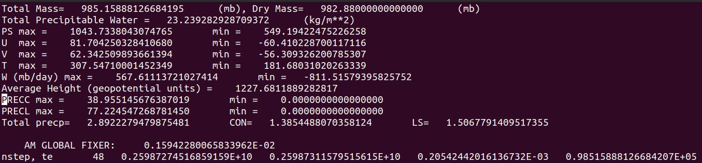

On Betzy¶
Login on Betzy with your usual Sigma2 username (i.e., you are not ubuntu any more), and proceed like on the Virtual Machine but use /cluster/work/users/$USER (which is equivalent to $USERWORK) instead of /home/ubuntu for staging and job data:
$ ssh -i ~/.ssh/YourPrivateSSHkey YourSigma2UserName@betzy.sigma2.no
$ cd $USERWORK
$ mkdir work archive
Note
All the necessary inputdata being already available on /cluster/shared/noresm/inputdata there is no need to download the Zenodo tarball when you are on Betzy (or Fram)
Pull the same container image as on the Virtual Machine, make it executable, and extract this time the Slurm batch job script job_hpc.sh
On many systems it is common to use an alternative launcher to start parallel applications, for instance Slurm’s srun rather than the mpirun wrapper provided by a particular MPI installation (as we did on the Virtual Machine for the “outside-in” exercise)
This approach is supported with Singularity as long as the MPI version installed in the container supports the same Process Management Interface (PMI) and version as that used by the launcher (which is the case with our container)
In the frame of this workshop we are therefore going to use srun for automatically distributing the processes to precisely the resources allocated to the job, without loading any module with MPI
Exercise 10
Edit the script to set nodes=1, tasks-per-node=16 and specify that we are using the development queue, then submit the Slurm job which will run NorESM for 1 day on 1x node and 16x CPUs.
Monitor the execution and once the simulation has finished check the timing profile
$ sbatch job_hpc.sh
Note
Short simulations do not necessarily provide the most representative performance figures therefore, for the purpose of benchmarking, longer simulations are normally performed (typically 1 month or more)
Exercise 11
Edit the script to set nodes=8 and tasks-per-node=128, delete the line with - - qos (in order to use the normal queue), change the name of the machine to ‘container’ and replace ‘ndays’ by ‘nmonths’, then resubmit the job to get a more precise estimate of the model throughput
Exercise 12
To thing about: which of the 1x16 or 8x128 CPU runs provides the best value-for-money?
The scalability being what it is, the more tasks are involved in the computation the more time is spent in communications rather than calculations, especially when several nodes are put to work (the bandwidth and latency are generally much better within a single node than inter-nodes), and therefore the performance declines rapidly
This also applies to bare-metal, not only to containers
Always try to find the sweet spot for your simulation, depending on the compset and resolution used
Unless there are short deadlines to meet, it is not sensible or economical (or environmentally friendly) to perform your experiment with the largest number of CPUs possible.
A few words on Bit-For-Bit reproducibility¶
Are NorESM simulations always identical on platforms with different hardware and software configurations?
Exercise 13
The short answer is “No!” when running on bare metal, but what happens when using a container?
We already had a look at outputs from the “outside-in” and “inside-out” simulations carried out with the container on the Virtual Machine with x16 Intel® Haswell processors.
How does that compare to the run on Betzy this time with x16 AMD® Rome processors?
Virtual Machine 1x16 VCPUs Intel® Haswell

Betzy HPC 1x16 CPUs AMD® Rome
Here again they turn out to be absolutely identical.
Note
It is also possible to use the diffn operator from the Climate Data Operator (CDO) software collection (several versions are available as modules on Betzy) to compare the contents of two datasets field by field, for instance history or restart NetCDF files: the exit status will be 0 if inputs are the same and 1 if they differ.
This is an example of result for 1-month simulations done with 128 CPUs on Betzy and Lumi confirming that there is no difference in the CAM history files: